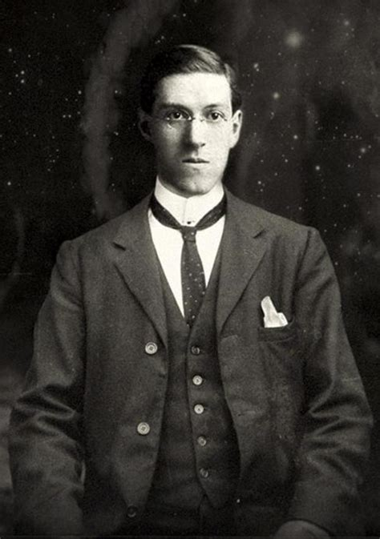
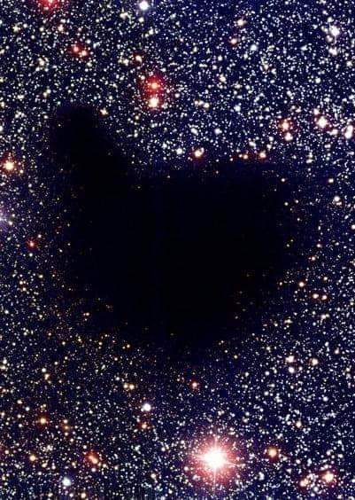

H.P. Lovecraft, el padre del horror cosmico
Hace 136 años nacia Howard Phillips Lovecraft el 20
de agosto de 1890 en Providencia, Rhode Island, fue
un escritor de obras que redefinieron el genero del
terror marcando el inicio de un perdurable legado.
"La más angitua y fuerte emoción de la humanidad es el miedo, y el miedo más antiguo y más fuerte, es el miedo a lo desconocido."
Una infancia entre sombras
Nacido el 20 de agosto de 1890 en Providence, Rhode Island, la vida de Lovecraft estuvo marcada por la tragedia desde el inicio. Su padre murió en un asilo psiquiátrico cuando Howard era apenas un niño, dejándolo bajo la tutela de una madre sobreprotectora y dos tías. Creció como un niño prodigio, pero de salud frágil. Pasaba las horas en la inmensa biblioteca de su abuelo, sumergiéndose en los clásicos, la astronomía y la mitología árabe. Fue allí donde las semillas de lo desconocido empezaron a germinar.
Que es el horror cosmico
Lovecraft refinó este estilo para contar historias sobre sus propios "mitos". que comprenden un conjunto de elementos sobrenaturales, mitológicos, humanos y extraterrestres. Su trabajo fue profundamente inspirado por autores anteriores que Lovecraft constantemente leía y admiraba, siendo algunos de ellos Edgar Allan Poe, Algernon Blackwood y lord Dunsany. La base del trabajo de Lovecraft fue el cosmicismo: la filosofía que indica que la vida ordinaria humana es diminuta e insignificante en comparación con la inmensidad de los misterios del Universo. En la búsqueda de la sabiduría o de la comprensión de los secretos del vasto universo en el que vivimos, los descubrimientos que se realizan pueden acabar dañando la cordura de una persona, ya que nuestra mente no esté preparada para asimilarlos. Las historias de Lovecraft usualmente toman lugar en la parte rural de Nueva Inglaterra, es decir, en la sección de Estados Unidos en la que el propio autor crecio.
